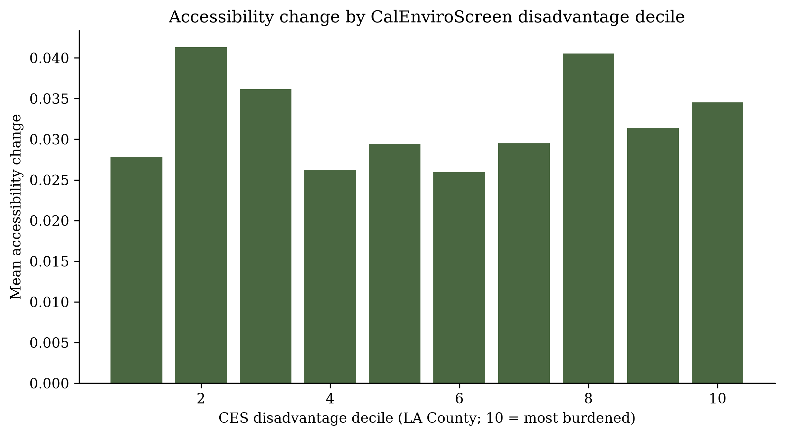
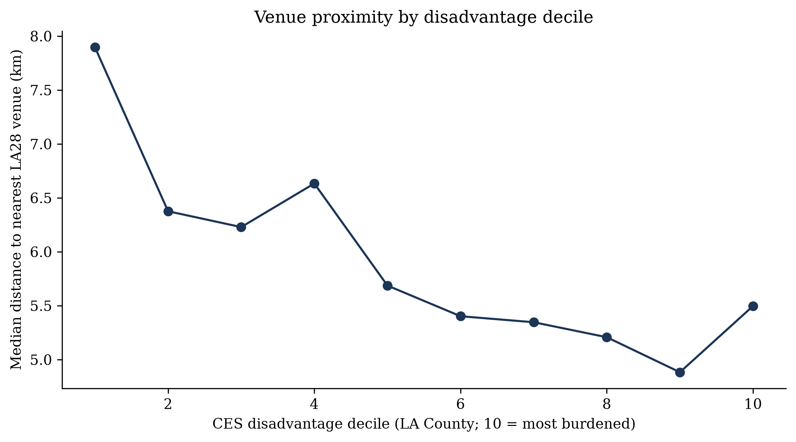
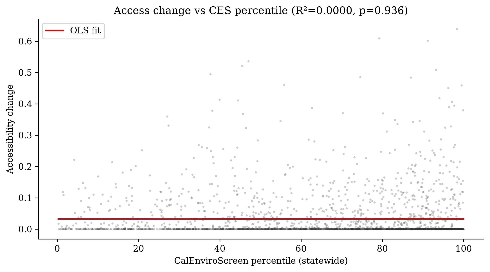

Summary
This project measures whether census tracts with higher CalEnviroScreen disadvantage in Los Angeles County are closer to curated LA28 venue locations and whether Metro’s Twenty-Eight by ’28 project points would improve rail-relative proximity more for burdened tracts than for less burdened ones. Under a transparent inverse-distance formula, venue proximity rises with disadvantage, while accessibility change from 28×28 points shows only a weak (slightly negative) association with disadvantage—and a null OLS relationship with CES percentile. Full methods are documented for replication.
Interactive map
Choropleth: CalEnviroScreen percentile. Markers: LA28 venues (dark) and 28×28 points (green).

Key findings
- Spearman ρ between CES disadvantage decile and accessibility change ≈ −0.09 (p < 0.001): weak negative association.
- OLS of accessibility change on CES percentile: R² ≈ 0.000 (p ≈ 0.94) — null linear relationship.
- Spearman ρ between CES disadvantage decile and venue access ≈ +0.20 (p < 0.001): higher-burden tracts tend to be closer to venues.
- About 37% of tracts have a 28×28 representative point closer than their nearest Metro rail stop.



Methodology (summary)
Analysis uses 2010 census tracts for Los Angeles County, joined to CalEnviroScreen 4.0, Healthy Places Index 3.0 (validation), ACS 2019 demographics, Metro GTFS rail stops, and curated venue / 28×28 points. Accessibility change equals the increase in inverse-distance access when 28×28 points are allowed to substitute for the nearest rail stop. Venue and project coordinates were manually curated and geocoded from public lists (not official GIS exports).
Limitations
- Corridor projects are represented as points; Euclidean distance is not travel time.
- No Games shuttle / GETS network is modeled.
- Manual geocoding introduces placement uncertainty—author QA recommended before publication.
- Indices describe baseline community conditions, not Olympic impacts.